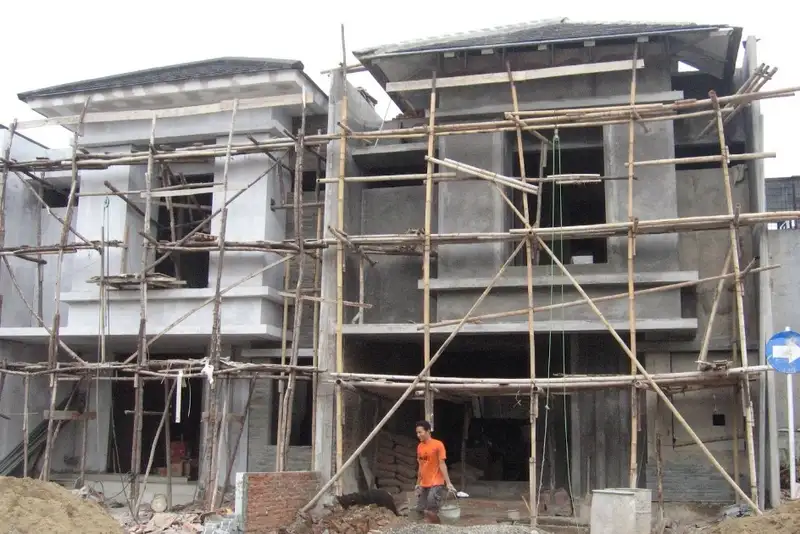

Daftar Isi
- Apa Itu Kontraktor Bangun Rumah 2 Lantai?
- Mengapa Rumah 2 Lantai Membutuhkan Kontraktor Berpengalaman?
- Apa Saja Layanan yang Ditawarkan?
- Bagaimana Cara Kerja Kontraktor?
- Berapa Kisaran Biaya Kontraktor?
- Bagaimana Cara Memilih Kontraktor yang Tepat?
- Apa Saja Kesalahan Umum Saat Memilih Kontraktor?
- FAQ
Kontraktor bangun rumah 2 lantai adalah penyedia jasa yang mengelola seluruh proses konstruksi rumah bertingkat, mulai dari perencanaan struktur hingga serah terima kunci. Jasa ini mencakup tenaga kerja, material, pengawasan, dan koordinasi desain agar bangunan aman dan sesuai anggaran.
- Kontraktor bangun rumah 2 lantai menangani perencanaan struktur, pengadaan material, dan pengawasan lapangan secara menyeluruh.
- Biaya jasa umumnya dihitung per meter persegi dan bervariasi tergantung spesifikasi material serta tingkat kerumitan desain.
- Memilih kontraktor terpercaya membutuhkan pengecekan portofolio, legalitas usaha, dan sistem kontrak kerja yang jelas.
- Tahapan pembangunan rumah 2 lantai mencakup pondasi, struktur, dinding, atap, hingga finishing.
- Kesalahan umum seperti minim riset dan kontrak tidak rinci dapat menyebabkan pembengkakan biaya dan keterlambatan proyek.
Apa Itu Kontraktor Bangun Rumah 2 Lantai?
Kontraktor bangun rumah 2 lantai adalah pihak profesional atau perusahaan yang bertanggung jawab menerjemahkan desain rumah bertingkat menjadi bangunan fisik yang aman dan fungsional. Berbeda dengan rumah satu lantai, konstruksi dua lantai memerlukan perhitungan struktur yang lebih kompleks, terutama pada pondasi, kolom, dan balok penopang beban tambahan dari lantai atas.
Secara umum, jasa kontraktor mencakup beberapa komponen utama: perencanaan teknis bersama arsitek atau tim desain, pengadaan dan pengelolaan material, penyediaan tenaga kerja tukang, hingga pengawasan mutu selama proses pembangunan berlangsung. Sebagian kontraktor juga menawarkan layanan terintegrasi mulai dari desain sampai konstruksi, yang sering disebut sistem design and build.
Bagi pemilik lahan di kawasan perkotaan yang padat, seperti sebagian wilayah Malang dan sekitarnya, membangun rumah dua lantai menjadi pilihan populer karena keterbatasan luas tanah. Dengan menambah lantai, kebutuhan ruang keluarga dapat terpenuhi tanpa memperluas area bangunan secara horizontal.
Mengapa Rumah 2 Lantai Membutuhkan Kontraktor Berpengalaman?
Rumah dua lantai membutuhkan kontraktor berpengalaman karena beban struktur yang harus ditopang lebih besar dibandingkan rumah satu lantai, sehingga kesalahan perhitungan dapat berisiko pada keretakan atau ketidakstabilan bangunan.
Perencanaan struktur menjadi aspek paling krusial. Pondasi rumah dua lantai umumnya membutuhkan jenis dan kedalaman berbeda dibandingkan rumah satu lantai, tergantung kondisi tanah di lokasi pembangunan. Kontraktor berpengalaman biasanya melakukan uji tanah sederhana atau menyesuaikan desain pondasi berdasarkan karakteristik lahan setempat.
Selain struktur, distribusi beban pada kolom dan balok juga memerlukan perhitungan cermat. Kesalahan pada tahap ini berpotensi menimbulkan risiko jangka panjang seperti retak struktural, kebocoran, atau penurunan bangunan yang tidak merata. Karena itu, pengalaman kontraktor dalam menangani proyek serupa menjadi indikator penting sebelum pekerjaan dimulai.
Apa Saja Layanan yang Ditawarkan Kontraktor Bangun Rumah 2 Lantai?
Layanan kontraktor bangun rumah 2 lantai umumnya mencakup konsultasi desain, perhitungan RAB, pengurusan izin, pelaksanaan konstruksi, dan pengawasan mutu hingga tahap finishing dan serah terima.
Berikut cakupan layanan yang umum ditawarkan:
- Konsultasi awal dan penyesuaian desain sesuai kebutuhan serta anggaran pemilik rumah.
- Penyusunan Rencana Anggaran Biaya (RAB) yang merinci kebutuhan material dan estimasi tenaga kerja.
- Bantuan pengurusan dokumen perizinan bangunan, termasuk Persetujuan Bangunan Gedung (PBG) di sebagian daerah.
- Pelaksanaan konstruksi mulai dari pekerjaan tanah, pondasi, struktur, dinding, atap, hingga instalasi listrik dan plumbing.
- Pengawasan mutu berkala untuk memastikan pekerjaan sesuai spesifikasi teknis yang disepakati.
- Finishing interior dan eksterior sebelum proses serah terima kunci.
Sebagian kontraktor menawarkan paket layanan terpisah antara jasa borongan tenaga saja dan borongan penuh termasuk material, sehingga pemilik rumah dapat menyesuaikan dengan preferensi anggaran.
Bagaimana Cara Kerja Kontraktor dari Awal hingga Serah Terima?
Proses kerja kontraktor bangun rumah 2 lantai umumnya dimulai dari konsultasi desain, dilanjutkan penyusunan kontrak dan RAB, pelaksanaan konstruksi bertahap, hingga diakhiri pemeriksaan mutu dan serah terima kunci.
Tahapan umum yang biasa dilalui:
- Konsultasi kebutuhan dan survei lokasi lahan.
- Penyusunan desain awal bersama arsitek atau tim teknis kontraktor.
- Penyusunan RAB dan penandatanganan kontrak kerja.
- Pekerjaan persiapan lahan dan penggalian pondasi.
- Pembangunan struktur utama, termasuk kolom, balok, dan lantai dua.
- Pemasangan dinding, atap, serta instalasi mekanikal dan elektrikal.
- Tahap finishing, meliputi pengecatan, pemasangan keramik, dan sanitasi.
- Pemeriksaan akhir mutu bangunan sebelum serah terima kunci kepada pemilik rumah.
Durasi setiap tahap dapat bervariasi tergantung luas bangunan, kompleksitas desain, dan kondisi cuaca di lokasi proyek.
Berapa Kisaran Biaya Kontraktor Bangun Rumah 2 Lantai?
Biaya kontraktor bangun rumah 2 lantai umumnya dihitung berdasarkan luas bangunan per meter persegi, dengan variasi harga tergantung spesifikasi material dan tingkat kerumitan desain yang dipilih.
Berdasarkan data industri konstruksi nasional, biaya pembangunan rumah bertingkat di Indonesia pada periode 2025-2026 berkisar dari kelas menengah hingga menengah atas, tergantung standar material yang digunakan. Sumber Asosiasi Kontraktor Bangunan Indonesia mencatat bahwa selisih biaya antara spesifikasi standar dan spesifikasi premium dapat mencapai puluhan persen dari total anggaran proyek.
Beberapa komponen yang memengaruhi total biaya antara lain:
- Luas total bangunan, termasuk lantai satu dan lantai dua.
- Jenis pondasi yang digunakan, disesuaikan dengan kondisi tanah.
- Kualitas material struktur seperti besi, semen, dan bata.
- Desain arsitektur, termasuk tingkat kerumitan bentuk atap dan fasad.
- Biaya jasa tukang, yang dapat berbeda antar wilayah.
- Kebutuhan tambahan seperti carport, taman, atau pagar.
Untuk mendapatkan gambaran biaya yang akurat, pemilik rumah disarankan meminta penawaran RAB tertulis dari beberapa kontraktor sebagai pembanding sebelum menentukan pilihan.
Bagaimana Cara Memilih Kontraktor Bangun Rumah 2 Lantai yang Tepat?
Memilih kontraktor bangun rumah 2 lantai yang tepat dapat dilakukan dengan memeriksa portofolio proyek sebelumnya, legalitas usaha, sistem kontrak kerja, serta reputasi melalui testimoni klien terdahulu.
Beberapa langkah praktis yang dapat dilakukan:
- Tinjau portofolio proyek rumah dua lantai yang pernah dikerjakan, termasuk foto sebelum dan sesudah pembangunan.
- Pastikan kontraktor memiliki badan usaha resmi atau izin operasional yang jelas.
- Minta detail RAB tertulis agar tidak ada biaya tersembunyi di tengah proyek.
- Tanyakan sistem pembayaran bertahap sesuai progres pekerjaan, bukan pembayaran penuh di awal.
- Cari ulasan atau testimoni dari klien sebelumnya sebagai indikator kualitas kerja.
- Pastikan ada kesepakatan tertulis mengenai garansi struktur pascapembangunan.
Kontraktor yang transparan biasanya bersedia menjelaskan detail teknis dan menjawab pertanyaan calon klien tanpa terkesan menutupi informasi penting.
Apa Saja Kesalahan Umum Saat Memilih Kontraktor?
Kesalahan umum saat memilih kontraktor bangun rumah 2 lantai antara lain tergiur harga murah tanpa rincian RAB, tidak memeriksa legalitas usaha, dan tidak memiliki kontrak kerja tertulis yang jelas.
Kesalahan-kesalahan ini sering menyebabkan pembengkakan biaya di tengah proyek, keterlambatan penyelesaian, hingga hasil bangunan yang tidak sesuai standar keamanan struktur. Untuk menghindarinya, calon klien disarankan meluangkan waktu riset lebih dalam sebelum menandatangani kontrak kerja.